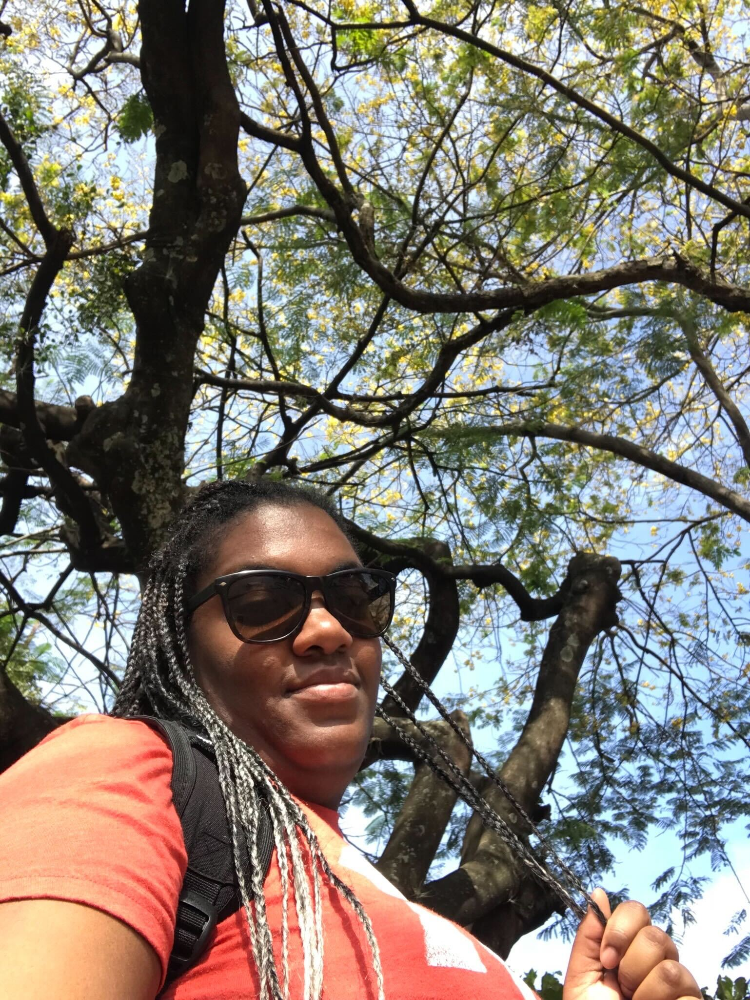
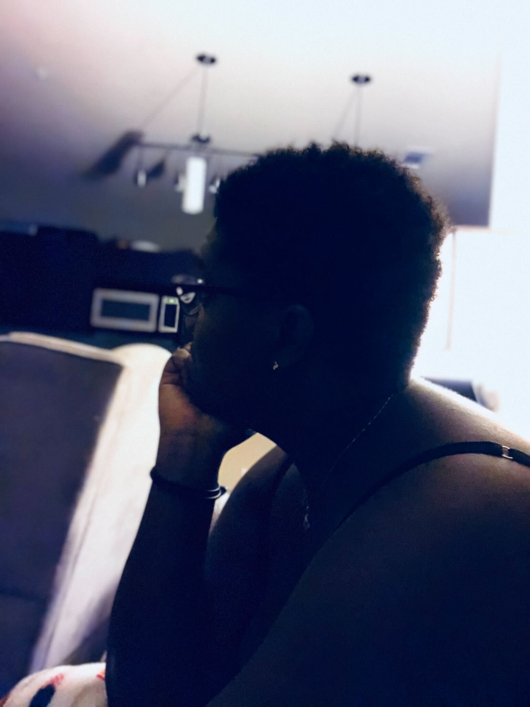

Hiking
Hiking is a way I found to start doing some physical activity, since it is a great form of exercise and can help me stay fit and healthy. Hiking often takes me to beautiful places with stunning views of nature, wheather it's mountains, lakes or the sea.
It helps me clear my mind after a stressful day and it also can be challenging, specially if I'm tackling steep inclines or long distances. Overcoming those challenches and pushing myself to my limits can be incredibly rewarding.
The connection with nature and environment is a way I find to scape the hustle and bustle of cuty life and get some peace and quiet in great outdoors. Is almost a mental health habit to reduce stress, anxiety and avoid depression.
Photography
Photography has allow me to express my creativity and capture the world in my own way. Is a way I find to share with my people how I see life itself. It helps me preserve memories and make perdure an instant, forever.
While it can be technically challenging, finding new techniques and features with my camera is rewarding and fun. I also have great passion for traveling and that moment after a trip, when I seat at home and review the pictures I took and share it with my family, is magic. I also adore that moment because my kids share their pictures and we can all see diferent perspectives of one same experience.